0. 준비물과 전제
| 항목 | 내용 |
|---|---|
| HRI-200 | 본체 뒷면 S/N 스티커 확인 |
| 케이블 | CT-174(10핀) → RADIO 1 / USB 케이블 → PC |
| 무전기 | FTM-510D (화면상 DST: JPN FW, F/W 1.03) |
| 승인 메일 | YAESU에서 받은 Node ID(DTMF ID), Room ID |
| 배정 주파수 | HL2TLS 노드용 FM 주파수 |
| PC | Windows 10/11, USB 포트 1개 |
Windows 11 주의: 스마트 앱 컨트롤(Smart App Control)이 켜져 있으면 설치 중 “이 앱의 일부가 차단됨” 오류가 날 수 있습니다. 끄면 다시 켤 수 없으니 신중히 결정하세요.
1. 설치 순서
- HRI-200 드라이버 먼저 설치 (USB는 아직 연결하지 않음)
- WIRES-X 소프트웨어 설치
- PC 재부팅
- 재부팅 후 HRI-200을 USB로 연결하고 CT-174로 무전기에 연결
순서: 소프트웨어 먼저 → 무전기 나중.
2. HRI-200 포트 연결과 실행
| 단자 | 용도 | HL2TLS |
|---|---|---|
| RADIO 1 | 주 연결(음성 채널). 무전기 뒷면 DATA 단자와 CT-174(10핀↔10핀) | 여기에 연결 |
| RADIO 2 | C4FM 디지털 두 번째 무전기(프리셋 검색용) 전용 | 비워 둠 |
| USB | PC 연결 겸 전원(Type B 쪽이 HRI-200) | PC에 연결 |
| MONITOR | 노드 송신음 확인용 3.5mm 잭 | 선택 |
무전기 1대 구성: RADIO 1 ↔ 무전기 DATA 단자(CT-174). RADIO 2는 사용하지 않습니다.
- 무전기 전원을 켤 때 GM + D/X를 함께 눌러 HRI-200 표시 확인
- PC에서 WIRES-X 실행 → COM 포트 선택 창이 나오면 HRI-200 포트 선택
무전기는 별도 DC 13.8V로 전원을 공급하고, 연결 전에 전원을 끕니다.
3. 설정 화면 들어가기
File → Settings 를 엽니다. 왼쪽 트리에서 항목을 고르고 값을 바꾼 뒤 Apply, 모두 끝나면 OK.
| 대분류 | 하위 항목 (이 문서 장) |
|---|---|
| Device settings | Transceiver (4장) · Transceiver settings (Preset CH) (5장) |
| Personal settings | Node settings (6장) · Round QSO room settings (7장) · Location settings (8장) |
| Property | HRI-200 setup (9장) · Call settings (10장) · General settings (11장) · Sound settings (12장) · Make list file (13장) · Log file settings (14장) |
장 번호 순서대로 하나씩 진행하세요. 각 장의 사진은 실제 HL2TLS 화면이며, 장비 시리얼 번호는 가렸습니다. 처음 실행할 때 나오는 WIRES ID Activation 창(Serial/Radio ID, DTMF ID Node/Room, CallSign, User ID, City/State/Country)은 승인 메일 값을 입력하고 ID Entry를 누르면 되며, 이 값이 6장 Node settings에 표시됩니다.
“Serial number/Radio ID and DTMF ID do not match” → ① S/N 오타(0과 O) ② Node ID가 이 S/N으로 등록된 번호인지 메일 확인 ③ 다른 장비 번호가 아닌지 ④ 그래도 안 되면 YAESU에 등록 정보 확인 요청
4. Device settings → Transceiver
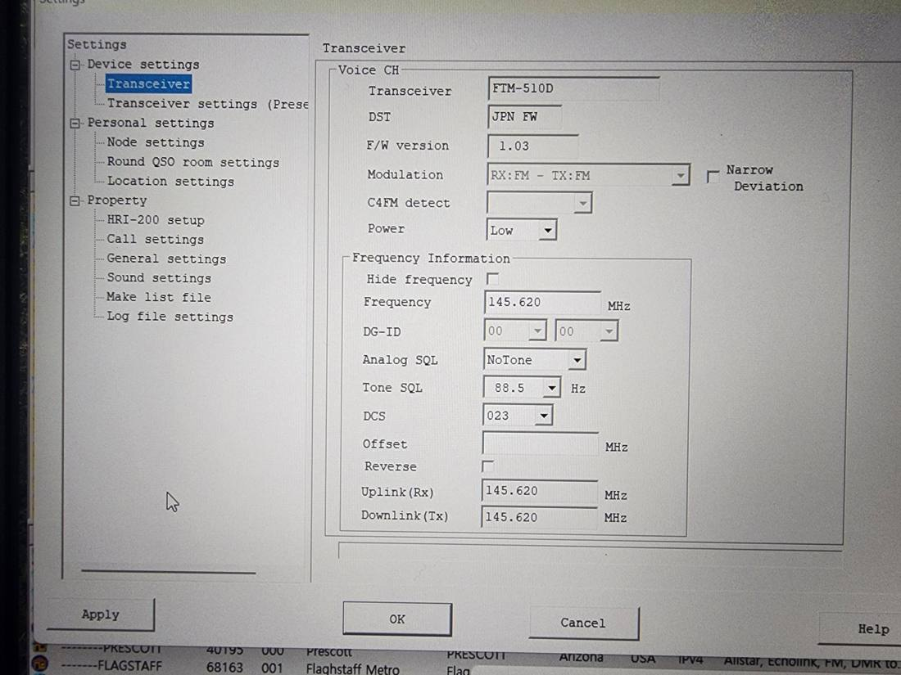
| 항목 | 설정 | 기능 |
|---|---|---|
| Transceiver / DST / F/W version | FTM-510D / JPN FW / 1.03 | 연결된 무전기 기종·펌웨어 표시(수정 불가) |
| Modulation | RX:FM – TX:FM | 아날로그 FM 운용. 회색이면 ONLINE 중이라 잠긴 상태 |
| Narrow Deviation | ☐ | 협대역 변조. 사용 안 함 |
| C4FM detect | 비움 | 디지털 운용 때 신호 감지 방식. 아날로그는 사용 안 함 |
| Power | Low | 송신 출력. 휴대용 박스는 저출력 |
| Hide frequency | ☐ | 체크하면 노드 목록에서 주파수를 숨김 |
| Frequency | 배정 주파수 (화면: 145.620) | 노드 운용 주파수. 무전기와 같아야 함 |
| DG-ID | 00 (회색) | 디지털 그룹 ID. 아날로그에서는 사용 안 함 |
| Analog SQL | NoTone | NoTone / Tone SQL / DCS 중 선택. 톤 없이 운용 |
| Tone SQL (88.5) | NoTone이면 무시 | Tone SQL을 고를 때만 적용되는 톤 주파수 |
| DCS (023) | NoTone이면 무시 | DCS를 고를 때만 적용되는 코드 |
| Offset / Reverse | 비움 / ☐ | 리피터용 오프셋. 단신(simplex)은 비움 |
| Uplink(Rx) / Downlink(Tx) | 같은 값 (145.620 / 145.620) | 수신·송신 주파수. 같으면 단신 운용 |
ONLINE 중에는 Modulation을 바꿀 수 없습니다. OFFLINE → File → Exit → 무전기 전원 OFF → 재시작 후 변경하세요.
HL2TLS와 LFC(여의도)가 같은 145.620이면 통달 범위가 겹칠 때 간섭이 납니다. 배정 주파수를 확인하세요.
5. Device settings → Transceiver settings (Preset CH)
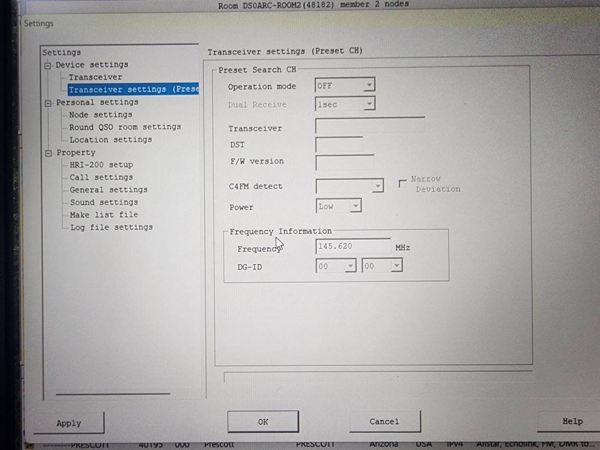
| 항목 | 설정 | 기능 |
|---|---|---|
| Operation mode | OFF | 다른 채널을 함께 탐색하는 기능(무전기 2대 또는 듀얼수신). 쓰지 않음 |
| Dual Receive | 1sec (회색) | 듀얼수신 전환 주기. Dual Rcv일 때만 사용 |
| Transceiver / DST / F/W version | 비움 | 프리셋용 무전기 정보(표시만) |
| C4FM detect · Narrow Deviation · Power | 회색 | 프리셋 채널용. 사용 안 함 |
| Frequency Information | 145.620 / DG-ID 00 (회색) | OFF일 때는 무시 |
이 화면은 Operation mode = OFF만 확인하고 넘어갑니다.
6. Personal settings → Node settings
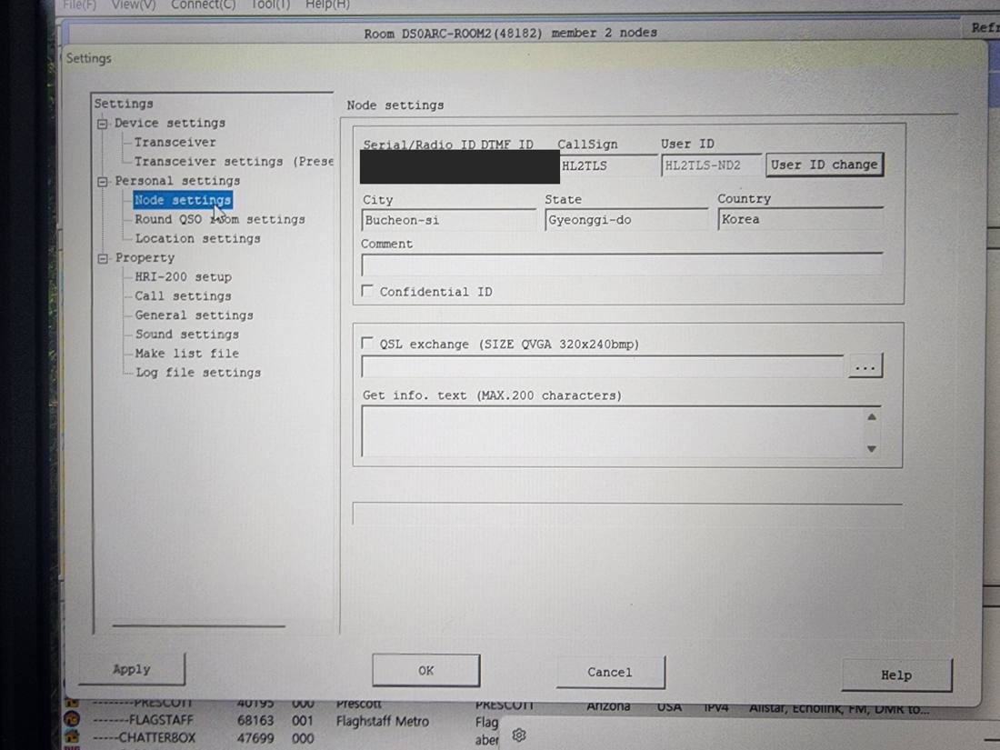
| 항목 | 설정 | 기능 |
|---|---|---|
| Serial/Radio ID | 자동 표시(수정 불가) | HRI-200 시리얼 번호. 스티커와 같은지만 확인 |
| DTMF ID | 자동 표시(수정 불가) | 메일의 Node ID(5자리). 핸디에서 #+번호로 이 노드를 부를 때 사용 |
| CallSign | HL2TLS | 노드 호출부호. 목록에 표시 |
| User ID | HL2TLS-ND2 | 디지털 접속용 이름. 바꾸려면 User ID change 버튼 (Style: Open/GM, News setting: ALL OK/Download only/QSO only) |
| City / State / Country | Bucheon-si / Gyeonggi-do / Korea | 설치 지역. 목록에 표시 |
| Comment | Korean Red Cross Seoul NDRT 입력 | 목록에 표시되는 설명(현재 비어 있음) |
| Confidential ID | ☐ | 체크하면 서버 목록에서 노드를 숨김 |
| QSL exchange | ☐ | QSL 카드 이미지(320×240 bmp) 교환. 사용 안 함 |
| Get info. text | 비움(선택) | 상대가 Get Info로 조회할 때 보이는 문구(최대 200자) |
Comment를 입력했으면 Apply를 누르세요.
7. Personal settings → Round QSO room settings
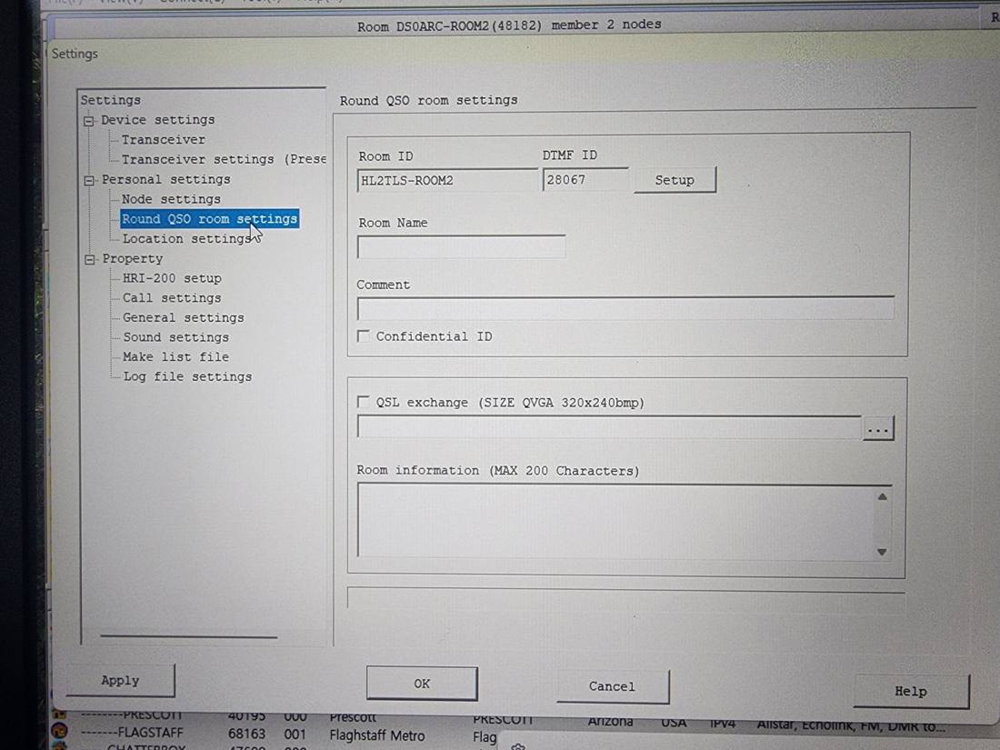
| 항목 | 설정 | 기능 |
|---|---|---|
| Room ID / DTMF ID | HL2TLS-ROOM2 / 배정 번호(그대로) | 이 노드에 배정된 룸 정보. 수정하지 않음 |
| Setup 버튼 | 누르지 않음 | 누르면 HL2TLS 자체 룸을 엽니다(Room Active) |
| Room Name / Comment | 비움 | 룸 목록에 표시되는 이름·설명 |
| Confidential ID | ☐ | 룸 비공개 |
| QSL exchange / Room information | ☐ / 비움 | 룸 QSL 이미지 / 룸 안내(최대 200자) |
RC-NET은 DS0ARC 룸(48182)에 접속하는 방식입니다. HL2TLS는 이 화면을 바꾸지 않고 다음으로 넘어갑니다.
8. Personal settings → Location settings
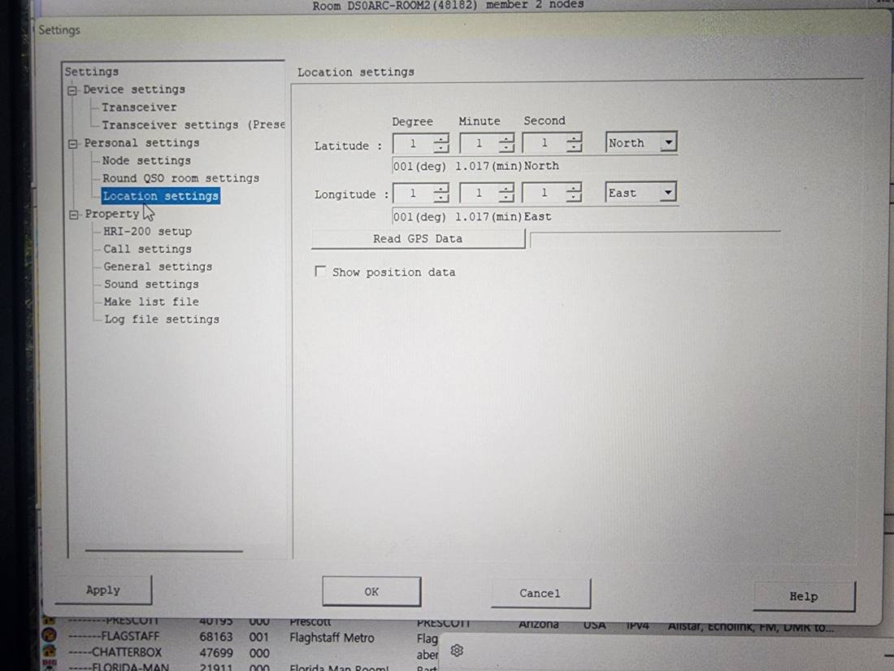
| 항목 | 설정 | 기능 |
|---|---|---|
| Latitude (Degree/Minute/Second, North/South) | 설치 장소 좌표(선택) | 노드 위도. 화면은 임시값 1°1′1″ North |
| Longitude (Degree/Minute/Second, East/West) | 설치 장소 좌표(선택) | 노드 경도. 화면은 임시값 1°1′1″ East |
| Read GPS Data | 필요 시 | GPS 내장 무전기에서 현재 위치를 읽어옴(고정국은 불필요) |
| Show position data | ☐ | 체크하면 위치가 서버 목록과 연결된 디지털 노드에 공개됨 |
위치 공개가 필요 없으면 Show position data는 체크하지 않습니다. 좌표는 그대로 두어도 됩니다.
9. Property → HRI-200 setup
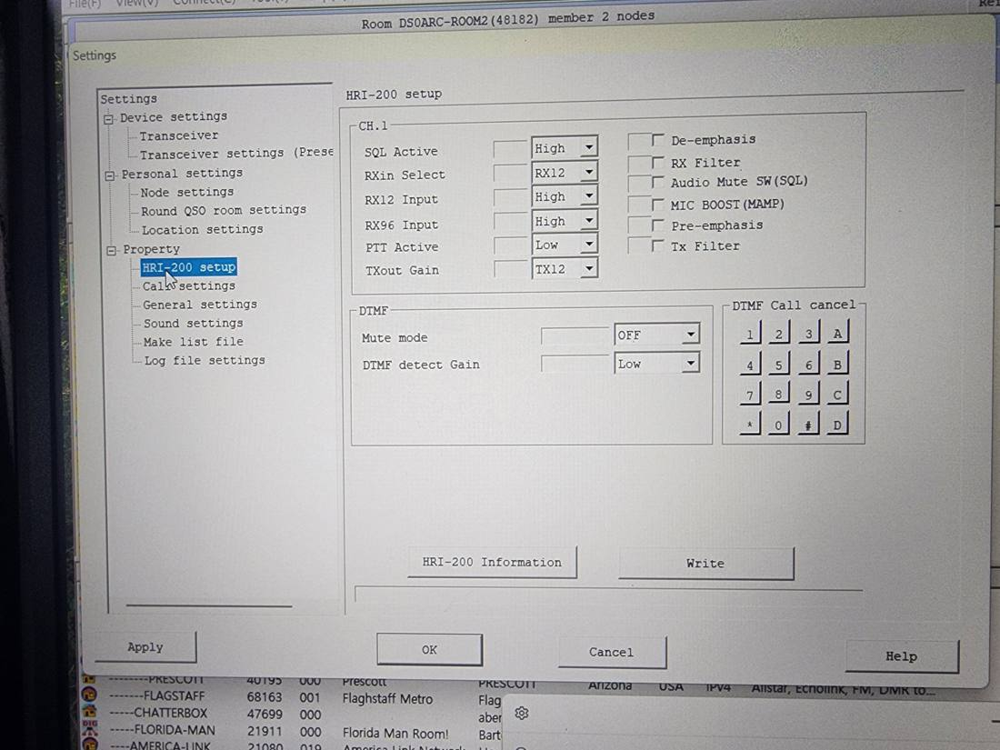
FTM 시리즈(10핀)는 화면의 기본값 그대로 둡니다. 아래는 각 항목의 의미입니다.
| 항목 | 기본(현재) | 기능 |
|---|---|---|
| SQL Active | High | 스켈치 신호 극성. 스켈치가 닫혔는데 LOCAL 표시등이 계속 켜지면 Low |
| RXin Select | RX12 | 수신 입력 단자 선택(RX12/RX96) |
| RX12 Input / RX96 Input | High / High | 입력 레벨 |
| PTT Active | Low | 송신 신호 극성. 송신 안 하는데 ON-AIR가 계속 초록이면 High |
| TXout Gain | TX12 | 송신 출력 단자(TX12/TX96) |
| De-emphasis · RX Filter | ☐ | 수신 음성 고역 감쇠 · 필터 |
| Audio Mute SW(SQL) | ☐ | SQL 단자와 수신 음성 스위치 연동 |
| MIC BOOST(MAMP) | ☐ | 아주 작은 입력용 증폭. 소리가 깨질 수 있음 |
| Pre-emphasis · Tx Filter | ☐ | 송신 음성 고역 강조 · 필터 |
| DTMF Mute mode | OFF | DTMF 감지 중 아날로그 소리 차단 여부 |
| DTMF detect Gain | Low | DTMF 인식 감도. #55555가 인식 안 되면 High |
| DTMF Call cancel (1~9, 0, *, #, A~D) | 전체 선택 | 선택하지 않은 버튼은 DTMF 입력으로 인식하지 않음 |
| HRI-200 Information | — | HRI-200 내부 설정값을 읽음 |
| Write | — | 바꾼 값을 HRI-200에 기록. 값을 바꿨을 때만 누름 |
10. Property → Call settings
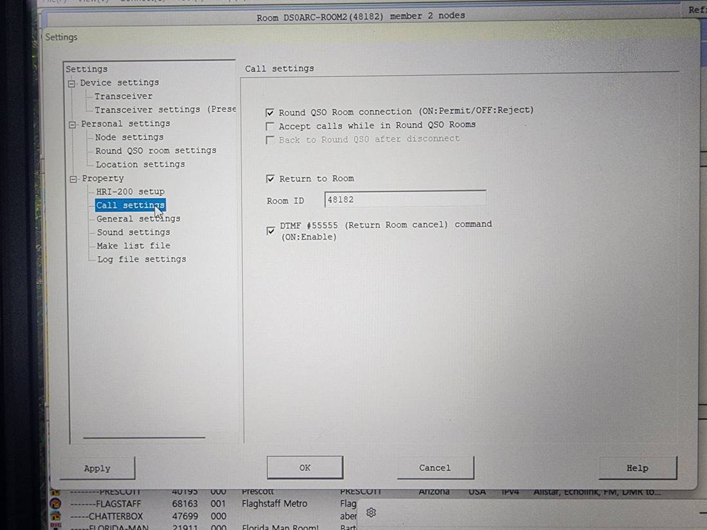
| 항목 | 설정 | 기능 |
|---|---|---|
| Round QSO Room connection | ☑ | ON: 요청이 오면 인터넷 룸에 연결, OFF: 거부 |
| Accept calls while in Round QSO Rooms | ☐ | 룸 접속 중 다른 노드 요청이 오면 룸을 끊고 받음 |
| Back to Round QSO after disconnect | 회색 | 위 항목이 ☐이면 회색(정상). 인터럽트 종료 후 이전 룸 복귀 |
| Return to Room | ☑ | 소프트웨어 시작 때마다 지정 룸에 자동 접속(상시 연결 유지) |
| Room ID | 48182 | 자동 접속할 룸 번호(DS0ARC 룸) |
| DTMF #55555 (Return Room cancel) command | ☑ | 핸디에서 #55555 → 자동복귀 취소(다른 곳과 연결할 때), 한 번 더 보내면 복귀 |
#55555는 접속 명령이 아니라 “복귀 취소” 명령입니다. 평소에는 Return to Room 때문에 자동으로 룸에 연결되어 있습니다.
11. Property → General settings
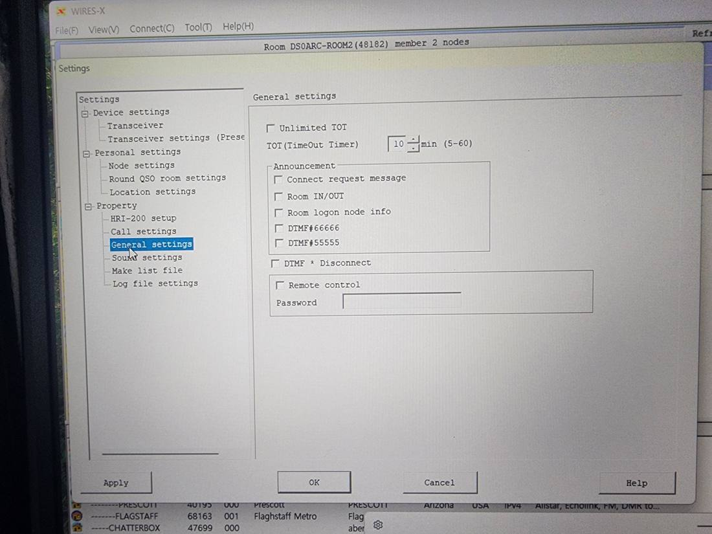
| 항목 | 설정 | 기능 |
|---|---|---|
| Unlimited TOT | ☐ | 체크하면 연결 시간 제한 없음 |
| TOT (TimeOut Timer) | 10 min (5~60) | 자동 끊김까지의 시간. Return to Room 룸에는 적용되지 않음 |
| Connect request message | ☐ | 접속 중 요청이 오면 안내방송 |
| Room IN/OUT | ☐ | 룸에 노드가 들어오고 나갈 때 안내방송 |
| Room logon node info | ☐ | 룸 접속 안내에 접속 노드 수를 추가 |
| DTMF#66666 | ☑ 권장 | #66666를 받으면 상태 안내를 송신 |
| DTMF#55555 | ☑ 권장 | #55555를 받으면 취소·복귀 안내를 송신(귀로 상태 확인) |
| DTMF * Disconnect | ☑ 권장 | *를 #99999와 같이 접속 해제로 처리 |
| Remote control / Password | ☐ / 비움 | 원격 감시 프로그램(WIRESMON-X) 접속 허용 여부와 암호 |
안내 음성은 영어 합성음(Sound settings의 Voice)입니다. 체크를 바꿨으면 Apply.
12. Property → Sound settings
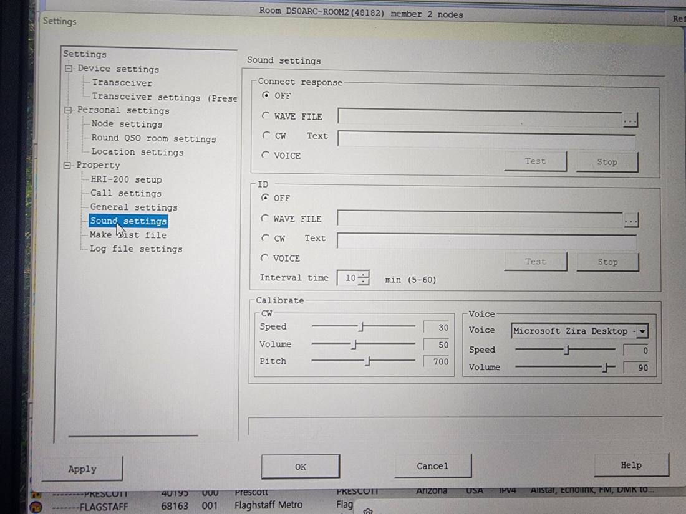
| 항목 | 설정 | 기능 |
|---|---|---|
| Connect response | OFF | 노드·룸 접속 때 재생하는 소리(OFF / WAVE FILE / CW / VOICE). Test·Stop 버튼은 접속 중 사용 불가 |
| ID | OFF | 주기적 ID 송출. 방식은 위와 같음 |
| Interval time | 10 min (5~60) | ID 송출 간격(ID를 쓸 때만 적용) |
| Calibrate – CW Speed / Volume / Pitch | 30 / 50 / 700 | 모스 속도 / 음량 / 음높이(Hz) |
| Calibrate – Voice | Microsoft Zira Desktop | 안내 음성 종류(OS에 따라 다름) |
| Voice Speed / Volume | 0 / 90 | 음성 속도 / 음량 |
기본값 그대로 둡니다.
13. Property → Make list file
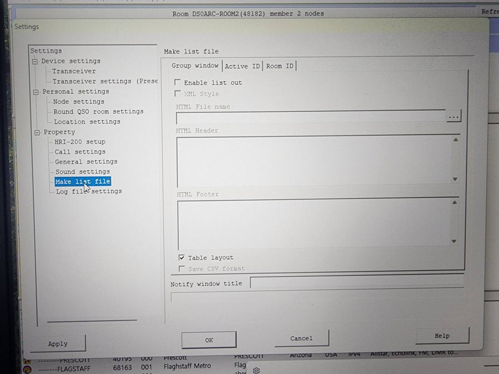
노드 목록을 HTML/XML 파일로 저장하는 부가 기능입니다. 사용하지 않으므로 그대로 둡니다. 탭: Group window / Active ID / Room ID.
| 항목 | 설정 | 기능 |
|---|---|---|
| Enable list out | ☐ | 체크해야 아래 항목이 활성화됨 |
| XML Style | 회색 | ON=XML, OFF=HTML |
| HTML File name | 비움 | 출력 파일명([…]로 선택). 탭마다 달라야 함 |
| HTML Header / Footer | 비움 | 파일 앞·뒤에 넣을 태그 |
| Table layout | ☑(기본) | 표 형식 출력(OFF는 탭 구분) |
| Save CSV format | 회색 | 같은 이름의 .csv도 저장 |
| Notify window title | 비움 | 다른 프로그램이 갱신을 감지하게 하는 창 제목 |
14. Property → Log file settings
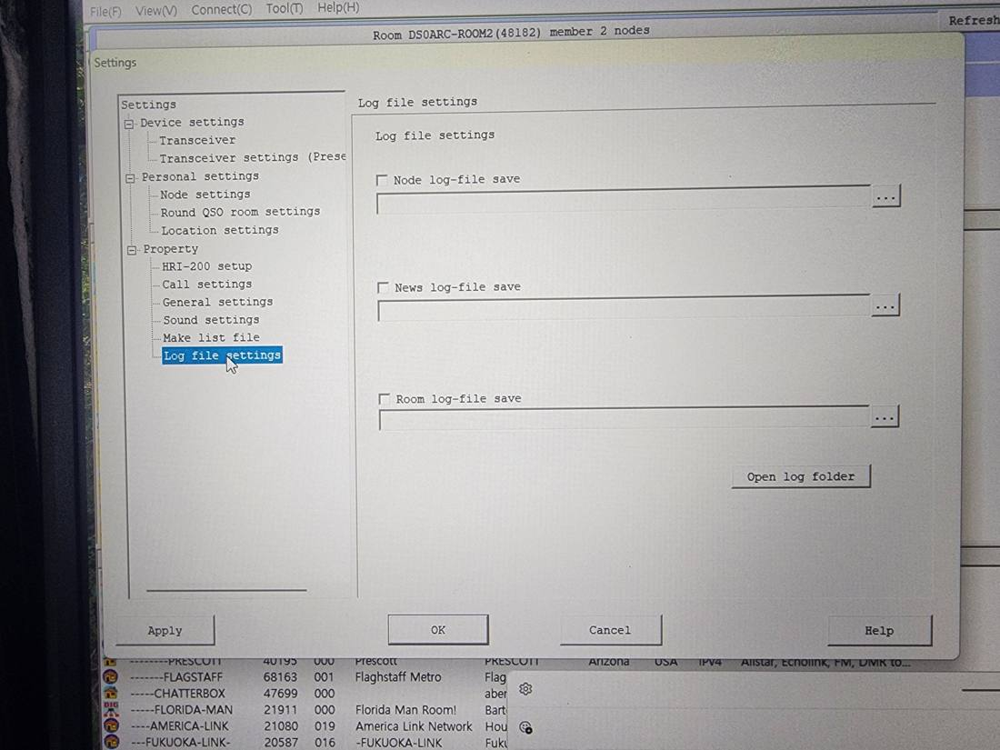
| 항목 | 설정 | 기능 |
|---|---|---|
| Node log-file save | ☐ | 노드 운용 이력 저장([…]로 저장 위치) |
| News log-file save | ☐ | 뉴스 접근 이력 저장 |
| Room log-file save | ☐ | 룸 운용 이력 저장 |
| Open log folder | — | 저장된 로그 폴더 열기 |
평소에는 ☐. 문제 추적이 필요할 때만 Node log-file save를 체크하세요.
설정 끝: 마지막으로 Apply → OK를 누릅니다.
15. 오디오 조정 (View → Audio adjustment)
접속(ONLINE) 전에만 조정할 수 있습니다.
- Windows 소리 설정 → 녹음에서 HRI-200 마이크 속성을 열고 음소거가 꺼져 있는지 확인
- WIRES-X View → Audio adjustment 열기
- 핸디에서 DTMF “1”을 송신하며 레벨 막대 확인
- 막대가 점선을 넘지 않게 마이크 레벨을 낮춤(넘으면 소리가 깨짐)
16. ONLINE 전환과 첫 교신 시험
- WIRES-X를 ONLINE으로 전환 → Return to Room 설정으로 룸 48182에 자동 접속(제목줄에 Room … member N nodes 표시)
- 핸디(FM, 톤 없음, 배정 주파수)에서 PTT를 누르고 말해 룸과 교신
- 다른 곳과 연결하려면 PTT에서 #55555(복귀 취소) → 연결 → 끝나면 다시 #55555(복귀)
- 접속 해제는 #99999 또는 *
- 상태 확인은 #66666
DTMF는 아날로그 운용에서만 동작합니다. 핸디의 DTMF 송신이 켜져 있어야 합니다.
17. 문제 해결
| 증상 | 원인 → 조치 |
|---|---|
| ID와 DTMF ID 불일치 | 3장 오류 해결 순서 |
| 설치 중 DLL/차단 오류 | Windows 11 스마트 앱 컨트롤 확인(0장) |
| 무전기에 HRI-200 안 뜸 | GM+D/X 다시, CT-174가 RADIO 1·DATA 단자인지, 설치 순서 확인 |
| 소리가 깨짐 | 15장 마이크 레벨 낮춤 |
| Modulation 변경 불가 | 4장: OFFLINE → Exit → 무전기 OFF → 재시작 |
| #55555가 반응 없음 | 9장 DTMF detect Gain을 High로 바꾸고 Write |
| 룸 접속 안 됨 | 인터넷, 10장 Return to Room ☑·48182, 룸 개설 여부(DS0ARC) |
18. 완료 체크와 내 값
- RADIO 1 ↔ DATA 단자, USB 연결
- 4장 Transceiver: FM / 배정 주파수 / NoTone / Low
- 5장 Preset CH: OFF
- 6장 Node settings: Comment 입력, Confidential ☐
- 7장 Round QSO room: Setup 누르지 않음
- 8장 Show position data ☐
- 9장 HRI-200 setup: 기본값
- 10장 Call settings: Return to Room ☑ 48182 / #55555 ☑
- 11장 General: #66666 ☑ · #55555 ☑ · * 해제 ☑
- 오디오 레벨 점선 이내
- 핸디로 룸 교신 시험 성공
| 내 값 | 기록 |
|---|---|
| HRI-200 S/N | |
| Node ID(DTMF ID) | |
| 배정 주파수 |